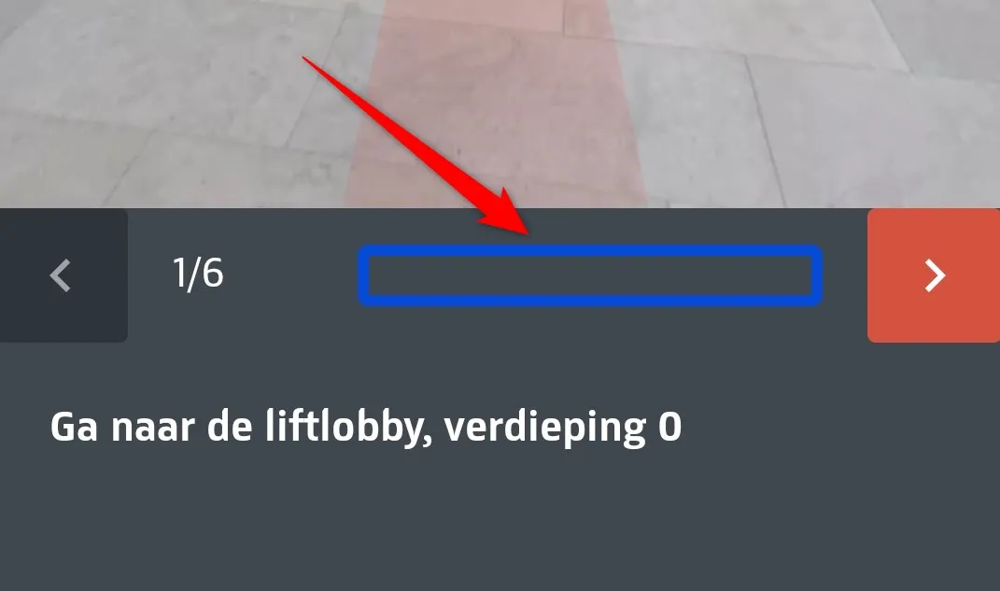

Audit digitale toegankelijkheid van de Rijksmuseum app, Android versie
Samenvatting
Wij hebben de Rijksmuseum app, de Android versie onderzocht tussen 13 en 30 december 2025. Op dit moment is een deel van de succescriteria als voldoende beoordeeld. In dit rapport lees je wat er bij de overige nog fout gaat en hoe je dat kunt verbeteren.
#1 - Schermen zijn beperkt tot één weergavestand (portret)
Impact: MediumType: TechniekWCAG: 1.3.4EN: 11.3.4
De lay-out van alle schermen, met uitzondering van het startscherm, is beperkt tot één weergavestand (portret). Websites en applicaties moeten zowel in verticale (portret) als horizontale (landschap) stand bruikbaar zijn. Bezoekers moeten zelf kunnen bepalen welke weergavestand voor hen het meest geschikt is. Afwijking hiervan is alleen toegestaan wanneer één specifieke weergavestand aantoonbaar noodzakelijk is.
Dit is met name relevant voor bezoekers die hun apparaat in een vaste positie gebruiken, bijvoorbeeld wanneer een tablet aan een rolstoel is bevestigd en de oriëntatie niet kan worden aangepast. In die situatie kan het beperken tot één weergavestand leiden tot verlies van functionaliteit of informatie.
Oplossing:
Zorg ervoor dat de inhoud van de applicatie meedraait en zich aanpast aan de gekozen weergavestand.
#2 - Alternatieve tekst van informatieve afbeelding beschrijft informatie onvoldoende
Op meerdere schermen staat boven- of onderaan of een informatieve afbeelding met de zichtbare tekst “Connected by kpn”. De alternatieve tekst van deze afbeelding is "Logo afbeelding". Deze alternatieve tekst beschrijft de afbeelding onvoldoende, omdat de zichtbare tekst niet is opgenomen.
Wanneer een afbeelding informatie overbrengt, moet de alternatieve tekst die informatie volledig en betekenisvol beschrijven. In dit geval wordt de visueel aangeboden informatie niet overgebracht aan gebruikers van schermlezers.
Daarnaast leidt het opnemen van tekst in afbeeldingen tot een toegankelijkheidsprobleem onder succescriterium 1.4.5. Tekst die in een afbeelding is verwerkt, kan niet door bezoekers worden aangepast, bijvoorbeeld door vergroting of door wijziging van kleur of lettertype.
Voorbeelden zijn aangetroffen op onder andere:
Startscherm,
Thuis in de 17de eeuw (Tours -> Thuis in de 17de eeuw -> Start tour)
Rembrandt van Rijn, Nachtwacht, 1962 (Start -> Nummer -> 500)
My route 1 (Voor jou -> Maak je eigen route->select some objects)
Oplossing:
Voorzie de afbeelding van een alternatieve tekst waarin alle zichtbare tekst, waaronder “Connected by kpn”, is opgenomen. De voorkeur heeft om deze informatie als gewone tekst op het scherm te plaatsen in plaats van als afbeelding.
#3 - Kleurcontrast van tekst kleiner dan 19px is onvoldoende
Op meerdere schermen is een rode knop (#D5523F) met witte tekst aanwezig, bijvoorbeeld de knop “Zoek” op het scherm “Zoek op nummer”. De contrastratio tussen tekst en achtergrond is 4,1:1.
Omdat de tekst kleiner is dan 19px, voldoet de contrastratio niet aan de minimale vereiste.
Oplossing:
Zorg ervoor dat het contrast tussen tekst en achtergrond minimaal 4,5:1 bedraagt voor tekst kleiner dan 19px.
Op schermen waarop een individueel kunstobject wordt weergegeven, staat onder de naam een nummer dat wordt voorafgegaan door een afbeelding van een koptelefoon. Deze afbeelding is informatief en geeft aan dat er een audiobeschrijving beschikbaar is.
Voor gebruikers van schermlezers wordt uitsluitend het nummer aangekondigd. De betekenis van de afbeelding wordt niet overgebracht, waardoor niet duidelijk is dat er een audiobeschrijving beschikbaar is.
Voorbeelden hiervan zijn aangetroffen op onder andere:
Thuis in de 17de eeuw (Start screen -> Bent u in het museum? - Tours tab -> Thuis in de 17de eeuw -> Start tour)
Rembrandt van Rijn, Nachtwacht, 1962 (Start screen -> Bent u in het museum? -> Nummer tab -> 500)
Maak je eigen route (Start screen -> Bent u in het museum? -> Voor jou -> Maak je eigen route -> elk object)
My route 1 (Start screen -> Bent u in het museum? -> Voor jou -> Maak je eigen route -> selecteer meerdere objecten).
Oplossing:
Voorzie de afbeelding van een beschrijvende alternatieve tekst, bijvoorbeeld: “Audiobeschrijving beschikbaar”.
#5 - Bij inzoomen zijn niet meer alle onderdelen zichtbaar en bedienbaar
Op alle schermen met carrousels hebben de inactieve stippen onvoldoende contrast ten opzichte van de wisselende achtergrond. Dit zijn informatieve grafische elementen die het aantal dia’s in de carrousel aangeven. Daarom moet het contrast minimaal 3,0:1 zijn.
Oplossing:
Zorg ervoor dat deze informatieve elementen voldoende contrast hebben (minimaal 3,0:1). Op deze pagina staat een instructie om het kleurcontrast te testen: https://properaccess.nl/hoe-test-ik-kleurcontrast/.
Bij het openen van de applicatie wordt een decoratieve achtergrondafbeelding weergegeven met de alternatieve tekst "Achtergrond afbeelding". Decoratieve afbeeldingen dragen geen informatie over en mogen daarom niet worden aangekondigd door schermlezers.
Oplossing:
Zorg ervoor dat de decoratieve afbeelding is verborgen voor schermlezers, bijvoorbeeld door een leeg alt-attribuut toe te passen.
De menuknop bovenaan het scherm heeft de toegankelijke naam “terug”. Deze naam beschrijft de functie van de knop niet correct. Hetzelfde probleem komt voor op andere schermen.
Oplossing:
Wijzig de toegankelijke naam van de knop naar “Menu”.
Op dit scherm zijn de volgende teksten niet gemarkeerd als koppen: “Het beste van het Rijksmuseum”, “Thematische tours”, “Thuis in de 17de eeuw” en andere vergelijkbare teksten.
Voor bezoekers die hulpsoftware gebruiken, is een tekst die er visueel uitziet als kop maar niet als kop is gemarkeerd niet bruikbaar. Deze bezoekers navigeren via koppen om de inhoud te scannen of snel naar een specifieke sectie te springen. Dit is alleen mogelijk wanneer de koppen ook in de code als kop zijn vastgelegd.
Wanneer koppen uitsluitend visueel zijn vormgegeven (bijvoorbeeld door vetgedrukte tekst), wijkt bovendien de structuur van de informatie in de code af van de visuele structuur.
Op dit scherm zijn teksten zoals “In de Philipdsvieugel, verdieping 1”, “Bekijk 18 werken op verdieping 2 (60 min)”, “Relieken, altaarstukken en schilderijen, op verdieping 0 (45 min)” en enkele andere teksten grijs (#A2ABAD) weergegeven op een witte achtergrond. De contrastratio bedraagt 2,3:1 en is daarmee onvoldoende.
Oplossing:
Omdat deze tekst kleiner is dan 24px en niet vetgedrukt, moet het contrast minimaal 4,5:1 zijn.
Wanneer een bezoeker een thematische tour start, worden de introductie en de kunstobjecten op de route gepresenteerd als een carrousel. De eerste dia, “Start intro”, bevat een audiobeschrijving zonder transcript. Voor bezoekers die het geluid niet kunnen horen, moet een tekstueel alternatief beschikbaar zijn. Dit is onder andere belangrijk voor mensen die doof of slechthorend zijn.
Oplossing:
Zorg ervoor dat de informatie op de dia “Start intro” ook als tekst beschikbaar is, bijvoorbeeld door een knop “In tekst” toe te voegen, evenals bij de andere dia’s in de route.
#12 - Visueel beschikbare informatie niet aangekondigd door schermlezers
Wanneer een route wordt gestart, worden de introductie en de kunstobjecten gepresenteerd als een carrousel. Bovenaan elke dia staat het nummer van de dia binnen de carrousel, bijvoorbeeld “1/17”. Deze informatie wordt niet aangekondigd aan schermlezers, waardoor bezoekers niet weten bij welke stap zij zich bevinden.
Oplossing:
Zorg ervoor dat deze informatie programmatisch beschikbaar is voor schermlezers.
Wanneer een route wordt gestart, worden de introductie en de objecten op de route gepresenteerd als een carrousel. Wanneer de audio op een van de dia’s wordt ingeschakeld, verschijnen knoppen om terug en vooruit te spoelen. De toegankelijke namen van deze knoppen zijn verwisseld: de knop om terug te spoelen heeft de toegankelijke naam “vooruitspoelen” en de knop om vooruit te spoelen heeft de naam “terugspoelen”. Dit is misleidend voor schermlezers.
Oplossing:
Wijzig de toegankelijke namen van de knoppen, zodat zij de functies van de knoppen correct beschrijven.
#14 - Alternatieve tekst van informatieve afbeelding heeft onvoldoende betekenis
Wanneer een route wordt gestart, worden de objecten op de route gepresenteerd als een carrousel. Elke dia heeft een icoon van een lopende man met de alternatieve tekst "Walk image". Deze tekst beschrijft de betekenis van de afbeelding onvoldoende.
Oplossing:
Wijzig de alternatieve tekst naar een betekenisvolle omschrijving, bijvoorbeeld “U bent op de route”.
Wanneer de tekst is vergroot via de instellingen van het besturingssysteem, is de tekst met het nummer van de audiobeschrijving van het object niet zichtbaar.
Oplossing:
Zorg ervoor dat ook bij vergrote tekst alle teksten op het scherm zichtbaar blijven.
Wanneer een route wordt gestart door op de knop “Start tour” te klikken, worden de introductie en de objecten op de route gepresenteerd als een carrousel. De toetsenbordfocus komt niet op de knop met een pijl die naar de volgende dia leidt (succescriterium 2.1.1). Het wisselen van dia gebeurt automatisch nadat de focus langs alle interactieve elementen is gegaan. Deze focusvolgorde is niet logisch.
Oplossing:
Zorg voor een logische focusvolgorde door de focus ook naar de knop met de pijl naar de volgende dia te laten gaan, zodat een bezoeker bewust naar de volgende dia kan navigeren.
#17 - Toegankelijke naam van knop is onvoldoende beschrijvend
Wanneer een route wordt gestart, worden de introductie en de objecten op de route gepresenteerd als een carrousel. Elke dia heeft een knop om audio te starten. Deze knop heeft de toegankelijke naam “Afspelen of pauzeren". Wanneer de audio wordt gestart, verandert het uiterlijk van de knop naar een pauze-icoon, maar de toegankelijke naam verandert niet. Dit kan verwarrend zijn voor bezoekers met cognitieve beperkingen.
Oplossing:
Zorg ervoor dat de toegankelijke namen van de knoppen dynamisch wijzigen: “Afspelen” bij het starten van de audio en "Pauzeren" bij het pauzeren of stoppen van de audio.
Wanneer een bezoeker een nummer selecteert of verwijdert, wordt deze wijziging niet aangekondigd door de schermlezer. Om het volledig geselecteerde nummer te controleren, moet de bezoeker terug navigeren naar het invoerveld boven het selectiegedeelte. Daarnaast wordt het geselecteerde nummer zonder voldoende context voorgelezen, bijvoorbeeld “Zoek op nummer…”.
Dit probleem doet zich ook voor op het scherm “Zoek op nummer”.
Oplossing:
Zorg ervoor dat het geselecteerde nummer wordt aangekondigd door de schermlezer en dat het invoerveld een duidelijke, contextuele label heeft, zodat gebruikers van schermlezers zowel de huidige waarde als het doel van het veld kunnen begrijpen.
#19 - Decoratieve afbeelding is niet verborgen voor schermlezers
Onderaan dit scherm staat een knop “Waar kan ik ze vinden?” met daarnaast een pijl-icoon. Dit icoon is decoratief, maar is niet verborgen voor schermlezers en wordt aangekondigd als “arrow right”. Deze tekst is bovendien toegevoegd aan de toegankelijke naam van de knop, wat overbodig en mogelijk verwarrend is (succescriterium 2.4.6).
Oplossing:
Verwijder de overbodige alternatieve tekst van het pijl-icoon en zorg ervoor dat decoratieve afbeeldingen niet worden aangekondigd door schermlezers.
#20 - Statusbericht wordt niet (tijdig) aangekondigd
Wanneer een niet-bestaand nummer wordt gezocht, bijvoorbeeld “55”, verschijnt onderaan het scherm het bericht “Geen werk gevonden”. Dit is een statusbericht. Statusberichten moeten automatisch worden aangekondigd door schermlezers zodra ze verschijnen of wijzigen. De benodigde code om dit mogelijk te maken ontbreekt.
Oplossing:
Zorg ervoor dat hulpsoftware dit statusbericht automatisch aankondigt.
Op dit scherm is de tekst die begint met “Voer het nummer in dat…” grijs (#A2ABAD) weergegeven op een donkergrijze achtergrond (#40474F). De contrastratio bedraagt 4,0:1 en is daarmee onvoldoende.
Oplossing:
Zorg ervoor dat voor tekst kleiner dan 24px en niet vetgedrukt een contrastratio van minimum 4,5:1 wordt gehaald.
#23 - Knoptekst is niet afgestemd op de taal van de applicatie
De knop waarmee ingevoerde nummers uit de zoekfunctie worden verwijderd, heeft de tekst “Delete button”. Omdat de applicatie volledig Nederlandstalig is Nederlands is, beschrijft deze tekst de functie van de knop niet correct.
Oplossing:
Gebruik een Nederlandstalige knoptekst die de functie van de knop correct beschrijft.
Naast de koppen “Operatie Nachtwacht” en “Meer weten” staan afbeeldingen van een camera en een koptelefoon. Deze afbeeldingen zijn informatief en geven aan dat bezoekers een video kunnen bekijken of extra informatie kunnen beluisteren. Voor slechtziende of blinde bezoekers is deze informatie niet op een andere manier beschiktbaar.
Oplossing:
Voorzie deze afbeeldingen van beschrijvende alternatieve teksten, zoals “Bekijk een video” en “Extra informatie beluisteren”.
Op dit scherm staan de koppen “Operatie Nachtwacht” en “Meer weten”. Deze teksten functioneren visueel als koppen, maar zijn niet als koptekst gemarkeerd.
Oplossing:
Maak deze teksten als koppen met het correcte kopnivueau.
#26 - Kleurcontrast bij tekst kleiner dan 24px is onvoldoende
Op dit scherm is de tekst “Connected by kpn” grijs (#858688) weergegeven op een donkergrijze achtergrond (#343437). De contrastratio bedraagt 3,4:1 en is daarmee onvoldoende.
Oplossing:
Zorg ervoor dat het contrast van de tekst minimaal 4,5:1 bedraagt.
Wanneer een route wordt gestart, worden de introductie en de objecten gepresenteerd als een carrousel. Wanneer de audio op een van de dia’s wordt ingeschakeld, verschijnen knoppen om terug en vooruit te spoelen. De toegankelijke namen van deze knoppen zijn verwisseld: de knop om terug te spoelen heeft de toegankelijke naam “vooruitspoelen” en de knop om vooruit te spoelen heeft de naam “terugspoelen”. Dit is misleidend voor gebruikers van schermlezers.
Oplossing:
Wijzig de toegankelijke namen van de knoppen, zodat zij de functies van de knoppen correct beschrijven.
#28 - Indicator voor afspeeltijd biedt onvoldoende context
Wanneer het geluid is ingeschakeld, verschijnt een indicator voor de afspeeltijd. Deze indicator heeft geen toegankelijke naam of context, waardoor gebruikers van schermlezers niet kunnen begrijpen waar het voorgelezen getal betrekking op heeft.
Oplossing:
Voorzie de indicator van een duidelijke toegankelijke naam en waarde, bijvoorbeeld door een toegankelijk label toe te voegen zoals “Resterende afspeeltijd…”.
Wanneer op dit scherm op “In tekst” wordt geklikt, verschijnt nieuwe inhoud met de beschrijving van een object in tekstvorm. De koppen in deze tekst zijn niet gemarkeerd als koppen. Dit geldt onder andere voor “Rembrandt van Rijn, Nachtwacht, 1642”, “Introductie”, “Meer zien” en “Meer weten”.
Oplossing:
Markeer deze teksten als koppen met het correcte kopniveau..
#30 - Tekststructuur is niet in losse elementen vastgelegd
In de tekstweergave wordt de inhoud visueel verdeeld in koppen en alinea’s, maar deze structuur is niet in de code vastgelegd. De schermlezer kondigt de volledige tekst aan als één blok, waardoor de gebruiker niet per afzonderlijk tekstdeel kan navigeren of laten voorlezen.
Oplossing:
Leg de visuele structuur van de informatie ook in de code vast door gebruik te maken van afzonderlijke elementen voor koppen en alinea’s.
Wanneer de videospeler wordt geopend, verschijnen de afspeelbedieningen. Deze verdwijnen na elke swipebeweging. Hierdoor is het voor gebruikers van schermlezers niet mogelijk om de focus te verplaatsen naar bedieningselementen zoals “Sluiten” , de voortgangsbalk of de instellingen.
Oplossing:
Zorg ervoor dat de bedieningselementen van de videospeler zichtbaar en focusbaar blijven tijdens swipe-navigatie.
#33 - Toegankelijke naam van knop is onvoldoende beschrijvend
De knop om audio te starten heeft de toegankelijke naam “Afspelen of pauzeren". Wanneer de audio wordt gestart, verandert het uiterlijk van de knop naar een pauze-icoon, maar de toegankelijke naam blijft gelijk. Dit kan verwarrend zijn voor bezoekers met cognitieve beperkingen.
Oplossing:
Laat de toegankelijke naam dynamisch meewisselen met de status van de knop: “Afspelen” bij starten en "Pauzeren" bij pauzeren of stoppen.
Bovenaan dit scherm staan filters om objecten voor een route te selecteren, zoals “Ontdek”, “Hoogtepunten” en andere opties. De geselecteerde optie wordt visueel onderscheiden, maar deze status is niet toegankelijk voor blinde en slechtziende bezoekers.
Oplossing:
Zorg ervoor dat de status van de geselecteerde optie wordt doorgegeven aan gebruikers van hulpsoftware.
#35 - Teksten boven objectgroepen zijn niet gemarkeerd als kop
Op dit scherm staat een lijst met objecten die aan de route kunnen worden toegevoegd. Elke groep afbeeldingen wordt voorafgegaan door een tekst, bijvoorbeeld “Tulpen”, “Feest”, “Katten” en andere teksten. Deze teksten zijn niet gemarkeerd als koppen.
Oplossing:
Markeer deze teksten als kopteksten met het correcte kopniveau.
#36 - Informatieve afbeelding heeft geen alternatieve tekst
Op dit scherm staat een lijst met kunstobjecten die aan de route kunnen worden toegevoegd. De afbeeldingen hebben geen alternatieve tekst. Afbeeldingen die informatie overdragen, moeten een betekenisvolle alternatieve tekst hebben waarin de relevante informatie uit de afbeelding wordt beschreven.
Oplossing:
Neem de naam van het kunstobject op in de alternatieve tekst.
#37 - Alternatieve tekst van achtergrondafbeelding heeft onvoldoende betekenis
Op dit scherm staat een lijst met objecten die aan de route kunnen worden toegevoegd. Wanneer een bezoeker een object selecteert, opent een nieuw venster met de naam van het object. De achtergrondafbeelding die over de hele pagina wordt weergegeven heeft de alternatieve tekst “Achtergrond afbeelding”. Deze tekst is onvoldoende betekenisvol.
Oplossing:
Als de afbeelding alleen decoratief is, verwijder dan de alternatieve tekst. Als het voor de bezoeker relevant is om te weten wat op de achtergrond wordt weergegeven, neem dan de naam van het object toe, bijvoorbeeld: “Achtergrond afbeelding - De Molen bij Wijk bij Duurstede”.
#38 - Focusvolgorde onlogisch na sluiten objectvenster
Op dit scherm staat een lijst met objecten die aan de route kunnen worden toegevoegd. Wanneer een bezoeker een object selecteert, opent een nieuw venster met de naam van het object en de knop “Voeg toe aan route”. Na het activeren van deze knop sluit het objectvenster, maar de focus blijft niet op het geselecteerde object staan. De focus verplaatst zich naar de eerste kop op het scherm, bijvoorbeeld “Tulpen”. Deze focusvolgorde onlogisch.
Oplossing:
Zorg ervoor dat na het sluiten van het objectvenster de focus terugkeert naar de afbeelding van het geselecteerde object in de selectielijst.
Wanneer een bezoeker een route aanmaakt en start, wordt een scherm met het eerste object weergegeven. Dit scherm bevat een icoon van een lopende man met de alternatieve tekst "Walk image". Deze tekst beschrijft de betekenis van de afbeelding onvoldoende.
Oplossing:
Wijzig de alternatieve tekst naar een betekenisvolle omschrijving, bijvoorbeeld “U bent op de route”.
#40 - Focusolgorde onlogisch en beperkt toetsenbordbediening
Wanneer een route wordt gestart via de knop “Start tour”, worden de objecten op de route gepresenteerd als een carrousel. De toetsenbordfocus komt niet op de knop met een pijl naar de volgende dia (succescriterium 2.1.1). Het wisselen van dia gebeurt automatisch nadat de focus langs alle interactieve elementen op het scherm is gegaan. Deze focusvolgorde is onlogisch.
Oplossing:
Zorg voor een focusvolgorde logisch door de focus ook naar de knop met de pijl naar de volgende dia te laten gaan, zodat een bezoeker bewust naar de volgende dia kan navigeren.
Op dit scherm staat naast “Hoe wil je navigeren” een schakelknop. Deze schakelknop wordt gebruikt om te wisselen tussen twee opties (“Trappen” en “Lift”) in plaats van een binaire aan/uit-toestand. Dit is niet consistent met het verwachte gedrag van schakelknoppen en maakt de interactie onvoorspelbaar. Een blinde of slechtziende bezoeker weet niet dat er twee opties zijn om te kiezen totdat de schakelknop wordt omgezet. Daarnaast kondigt hulpsoftware geen correcte rol en toestand aan, wat verwarrend is voor bezoekers.
Oplossing:
Zorg ervoor dat het juiste bedieningselement wordt gebruikt en dat naam, rol en toestand duidelijk worden aangekondigd aan schermlezers.
#42 - Bezoekers die inzoomen kunnen niet meer alle functies gebruiken
Wanneer de tekst is vergroot via de instellingen van het besturingssysteem, is de tekst “Trappen” gedeeltelijk zichtbaar en is de tekst “Lift” helemaal niet zichtbaar.
Oplossing:
Zorg ervoor dat ook bij tekstvergroting alle elementen zichtbaar en bedienbaar blijven.
Bovenaan dit scherm staat een knop met een kaarticoon. Deze knop heeft geen toegankelijke naam. Hierdoor is voor gebruikers van een schermlezer onduidelijk wat de bestemming of de functie van de knop is.
Op dit scherm komt de toetsenbordfocus op meerdere onzichtbare interactieve elementen terecht. Na de knop met de kaart gaat de focus naar drie onzichtbare knoppen met dezelfde tekst “Go this way”. Na de tekst “1/6” komt de focus ook op een onzichtbaar element terecht.

Toetsenbordfocus mag niet terechtkomen op onzichtbare interactieve elementen. Als dit wel gebeurt, kan een bezoeker deze onbedoeld activeren en wordt de navigatie onvoorspelbaar.
Oplossing:
Zorg ervoor dat alleen zichtbare elementen toetsenbordfocus kunnen krijgen en dat de focusvolgorde logisch en voorspelbaar blijft.
Op dit scherm is de tekst “Veelgestelde vragen” niet gemarkeerd als kop. Dit probleem geldt ook voor koppen in de carrousel, zoals “Tours volgen” en “Zoek op nummer”.
Oplossing:
Markeer deze teksten als kopteksten.
#46 - Carrousel is niet toegankelijk met het toetsenbord
Op dit scherm staat een carrousel die niet met het toetsenbord te bedienen is. De carrousel heeft navigatiestippen, maar deze zijn niet toegankelijk met het toetsenbord.
Oplossing:
Maakde navigatiestippen toegankelijk met het toetsenbord of voeg pijlknoppen toe met de namen “Vorige slide” en “Volgende slide”. Als wordt gekozen voor het interactief maken van de stippen, zorg ervoor dat het aanklikbare gebied minimaal 24x24 px is (succescriterium 2.5.8).
#47 - Wisselen van dia’s is alleen mogelijk met gebaren
Op dit scherm staat een carrousel. Deze carrousel maakt het mogelijk om dia’s horizontaal te verplaatsen door te klikken en te slepen.
Wanneer specifieke acties zoals swipen of slepen nodig zijn om met een component te werken, moet ook een alternatieve, eenvoudigere manier bedieningsmethode beschikbaar zijn. Dit is noodzakelijk voor bezoekers die geen nauwkeurige gebaren kunnen uitvoeren of die hulpsoftware gebruiken, zoals hoofdaanwijzers of oogbesturingssystemen.
Oplossing:
Zorg ervoor dat de carrousel ook bedienbaar is met eenvoudige klikken of tikken, of viaknoppen of pijltjestoetsen.
#48 - Informatie over de carrousel is niet in de code vastgelegd
Op dit scherm staat een carrousel met grijze stippen onderaan. Deze stippen geven aan hoeveel slides er zijn en welke slide actief is. De actieve slide wordt visueel onderscheiden, maar deze informatie ontbreekt in de codelaag. Daardoor weten gebruikers van schermlezers niet welke slide actief is. Deze informatie moet beschikbaar worden gemaakt, bijvoorbeeld tekst die visueel verborgen is maar toegankelijk voor hulpsoftware.
Oplossing:
Zorg ervoor dat deze informatie toegankelijk is voor gebruikers van hulpsoftware.
Over dit onderzoek
Leeswijzer
Onze rapporten zijn anders. Bij het bespreken van de gevonden problemen volgen wij niet de structuur van de norm, maar die van jouw website of app. Hierdoor kun je gewoon per pagina of scherm aan de slag gaan. Wel zo makkelijk! Je vindt verderop een overzicht van alle pagina’s met problemen.
We geven je bij elk gevonden issue een paar voorbeelden, maar niet een complete lijst. Controleer zelf of het probleem ook nog op andere plekken voorkomt. Zie het rapport als een leidraad.
Gebruikte norm
Dit onderzoek laat zien in hoeverre de website op dit moment voldoet aan WCAG 2.1, niveau A en AA. WCAG staat voor Web Content Accessibility Guidelines. Dit is de internationale norm voor digitale toegankelijkheid. De Europese norm EN 301 549 bevat alle eisen van WCAG op niveau A en AA.
In dit rapport hebben we korte beschrijvingen van de succescriteria uit de norm opgenomen, met een algemene uitleg erbij. Wil je ze helemaal lezen? Bekijk dan de documentatie van WCAG.
Gebruikte onderzoeksmethode
We gebruiken de onderzoeksmethode WCAG-EM van het W3C. Het proces ziet er als volgt uit:
vaststellen wat binnen en buiten scope valt
vaststellen welke technologieën zijn gebruikt
steekproef (sample) samenstellen
steekproef onderzoeken
gevonden issues beschrijven
Het grootste deel van het onderzoek doen we met de hand. Voor een deel van de toegankelijkheidseisen gebruiken we automatische tools als ondersteuning, zoals axe-core en Chrome Developer Tools.
Belangrijk om te weten
Dit rapport helpt je om de toegankelijkheid van je website te verbeteren. Maar let op: het is geen definitieve, volledige lijst van alle aanwezige toegankelijkheidsproblemen. Dat zit zo:
Het is een steekproef
Ten eerste is het onderzoek gebaseerd op een steekproef. Die is op een betrouwbare manier genomen, en de meeste problemen zullen daardoor zeker aan het licht komen. Toch kan een probleem net buiten de steekproef vallen. Bij een volgend onderzoek kan het wel ontdekt worden.
Op basis van falsificatie
We beoordelen vanuit het principe van falsificatie. Dat houdt in dat we proberen te bewijzen dat iets niet waar is, in plaats van te bevestigen dat het klopt. ‘Voldoet’ betekent daarom dat we geen reden hebben gevonden om een punt af te keuren. Maar als we later wél een reden vinden, kan het alsnog worden afgekeurd.
Voortschrijdend inzicht
Het komt voor dat de beoordeling van een succescriterium op detailniveau verandert. De norm beschrijft namelijk niet élk mogelijk scenario. Samen met andere onderzoeksbureaus overleggen we hoe we met bepaalde situaties omgaan. Zo kan iets dat nu wordt afgekeurd, soms bij een volgend onderzoek worden goedgekeurd en andersom.
Oplossen leidt tot nieuw probleem
Ten slotte kan het gebeuren dat bij het oplossen van een probleem onbedoeld een nieuw toegankelijkheidsprobleem ontstaat. Dat komt dan bij een volgend onderzoek pas naar voren.
Hoe werkt dit rapport?
Bevindingen bekijken en filteren
Alle gevonden toegankelijkheidsproblemen staan onder Gevonden problemen. Je kunt de bevindingen filteren op:
Impact (Groot, Medium, Klein, Advies) — hoe ernstig is het probleem voor de gebruiker?
Type (Content, Techniek) — moet de inhoud of de techniek worden aangepast?
Status (Open, Opgelost) — welke problemen zijn al verholpen?
Voortgang bijhouden
Je kunt je voortgang op twee manieren bijhouden:
CSV-export — exporteer alle bevindingen als CSV-bestand en laad het in een (online) spreadsheet om met je team samen te werken.
Jira-export — exporteer alle bevindingen als Jira-compatibel CSV-bestand. Importeer het via Jira > Issues > Import issues from CSV. Bevindingen worden aangemaakt als bugs met prioriteit op basis van impact.
Registreer in de browser — activeer deze optie om per bevinding bij te houden of het is opgelost. Je voortgang wordt opgeslagen in je browser. Niemand anders kan je resultaat zien. Let op: de voortgang is gekoppeld aan je browser. Als je een andere browser of een ander apparaat gebruikt, begint de telling opnieuw.
Plan van aanpak — download een geprioriteerd plan van aanpak om de gevonden problemen stap voor stap op te lossen. Dit is beschikbaar bij audits vanaf maart 2026.
Link naar een specifieke bevinding delen
Bij elke bevinding verschijnt een link-icoon wanneer je er met de muis overheen gaat. Klik op dit icoon om de directe link naar die bevinding te kopiëren. Je kunt deze link plakken in een e-mail of chatbericht, bijvoorbeeld om een vraag te stellen aan Proper Access over een specifiek punt.